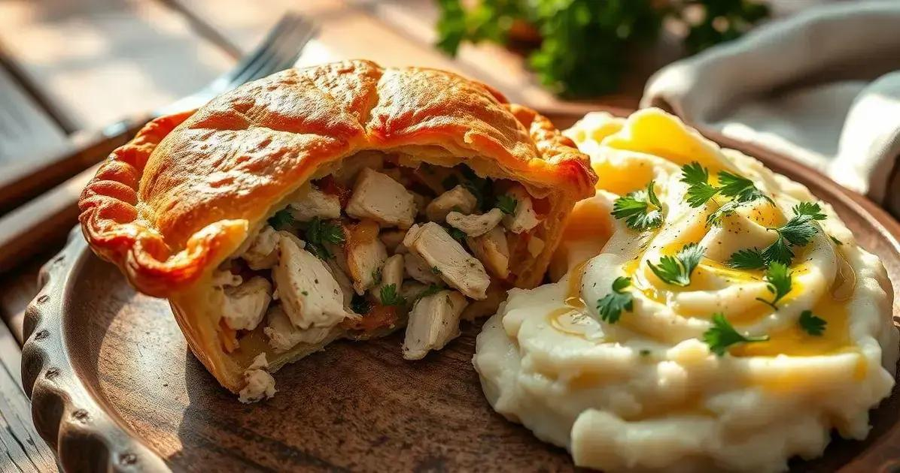

Tortas salgadas
Torta de frango

Ingredientes
- ½ kg de frango
- 2 xícaras de mozarela ralada
- 1¾ xícara de leite
- 1 cebola picada
- 2 colheres (chá) de orégano
- 1 kg de batatas
- 6 colheres (sopa) de manteiga
- ⅓ xícara de leite
- 5 colheres (sopa) de salsa picada
- 2 cenouras raladas grosso e cozidas
- 2 colheres (sopa) de cebolinha verde picada
- 2 colheres (sopa) de maionese
- 3 colheres (sopa) de farinha de trigo
- 1 colher (sopa) de purê de tomate
- 1 gema
Modo de preparo
- Cozinhe o frango e desfie. Ponha num prato raso e junte o queijo, o leite, a cebola e o orégano. Cubra e leve à geladeira para marinar.
- Descasque as batatas, corte em cubos e cozinhe em água e sal. Escorra, passe pelo espremedor e ponha numa tigela. Junte 4 colheres (sopa) de manteiga e o leite; misture até obter um purê. Tempere com sal, junte a salsa e reserve.
- Escorra o líquido da marinada do frango e reserve. Em outra tigela, misture o frango desfiado, a cenoura, a cebolinha e a maionese.
- Na frigideira, derreta a manteiga restante, polvilhe a farinha e doure ligeiramente. Retire do fogo e junte aos poucos o líquido da marinada, mexendo sempre. Leve ao fogo, junte o purê de tomate e cozinhe até engrossar.
- Junte o molho à mistura de frango. Despeje numa fôrma refratária (2 litros), cubra com o purê de batata e decore a superfície com sulcos de garfo.
- Bata a gema com 2 colheres (sopa) de água e pincele a superfície. Asse em forno alto preaquecido (200 °C) por cerca de 50 minutos, até dourar. Deixe esfriar e congele.
Observação: Para congelar crua: pincele com gema batida só depois de descongelar.